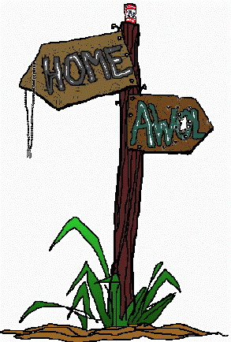

MY MOTHER WAS THE FIRST TO UNDERSTAND something wasn't right when I wouldn't eat her cooking. It struck her as sharply as outright antagonism or a betrayal, but my remoteness and matter-of-factness when I told her it's okay, I feed myself now must have impressed her as not hostile, just helpless. At first she hovered around whenever I entered the kitchen absently opening cabinets, drawers, and--tentatively, as it had become a foreign vessel--the refrigerator. But her presence just called attention to my discomfort and hastened my departure from the kitchen, setting me off the project of feeding myself altogether.
It was apparent Norman was not at all capable of cooking for himself, would not permit anybody else to lay a plate before him, and only in a stupor of hunger would finally, half-consciously make to replenish his energy. Best not to disturb, as it was stupefaction that was keeping him alive, although by now he was nearly anemic.
She was sure she was not exaggerating. Although my father insisted, "Calm down. He'll snap out of it."